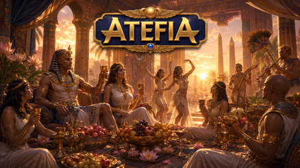
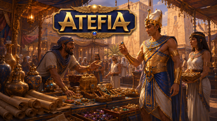
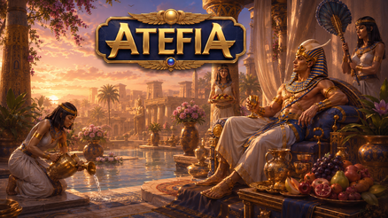

Casino Welcome Bonus
100% up to €500 + 200 FS

Sport Welcome Bonus
100% up to €100

Tournaments
Daily prizes

VIP Free bet Daily
50% up to €500


Table of Contents

Atefia Płatności: Zasada Porządku Zanim Zaczniesz
Największy stres nie bierze się z samej gry, tylko z momentu, kiedy pieniądze zaczynają „żyć” własnym życiem. Wyobraź sobie sytuację: robisz zasilenie, grasz chwilę, a potem nie jesteś pewien, co było wpłatą, co było próbą, a co jeszcze „wisi”. Wtedy pojawia się chaos i odruch klikania wszystkiego po kolei.
W 2026 warto podejść do tego jak do prostego systemu. Dwa kroki przed grą: ustawiasz budżet na rozrywkę i sprawdzasz, gdzie widzisz historię operacji. Trzeci krok: dopiero wtedy wchodzisz do gier. Ta kolejność brzmi nudno, ale dokładnie o to chodzi - pieniądze mają być nudne, przewidywalne i łatwe do odtworzenia.
Platforma działa dla pełnoletnich użytkowników i może stosować standardowe kroki bezpieczeństwa, więc czasem zobaczysz weryfikację lub dodatkowe potwierdzenia. Jeśli zrobisz je z wyprzedzeniem, w spokojny dzień, potem wypłacanie staje się po prostu kolejną funkcją w menu, a nie wydarzeniem wieczoru.
Jak Czytać Ekran Kasy Bez Zgadywania
Wyobraź sobie, że widzisz kilka przycisków i każdy wygląda „prawie tak samo”. Najłatwiej wtedy zrobić coś automatycznie, a później mieć wrażenie, że system „zrobił inaczej”. Dobry nawyk to czytanie krótkich podsumowań przed potwierdzeniem - tam zwykle widać metodę, kwotę i status.
Jeśli grasz na telefonie, pamiętaj, że część informacji bywa zwinięta w panelu. Zanim klikniesz „dalej”, przewiń całą stronę kasy raz do końca. To jedna minuta, która oszczędza dużo frustracji.
Dlaczego Spójność Metody Ułatwia Życie
Wyobraź sobie, że raz zasilasz kontem bankowym, raz portfelem online, a potem chcesz odebrać środki jeszcze inną drogą „bo tak wygodniej”. Wtedy częściej pojawiają się dodatkowe kroki. Spójność działa jak skrót - mniej zmiennych, mniej pytań, mniej niepewności.
Jeśli planujesz zmianę metody, zrób ją wtedy, gdy nie masz presji czasu. Najgorszy moment na eksperymenty to chwila po sesji, kiedy chcesz już zamknąć temat i iść spać.

Atefia Depozyt: Jak Zasilać Konto Z Głową
Zasilenie konta ma być początkiem spokojnej sesji, a nie startem napięcia. Wyobraź sobie, że masz ochotę „tylko sprawdzić jedną grę”, ale zaczynasz od dużej kwoty i nagle czujesz presję, żeby grać dłużej. To nie jest błąd systemu - to efekt braku planu.
Najprostsza strategia w 2026 to mały test na początku. Robisz niewielkie zasilenie, sprawdzasz, czy saldo aktualizuje się poprawnie, i dopiero potem decydujesz, czy w ogóle chcesz kontynuować. Ten test jest jak sprawdzenie lusterek przed jazdą - nie musi być ekscytujący, ma być bezpieczny.
Druga rzecz to limit. Jeśli platforma pozwala ustawić limit zasilenia lub przypomnienia czasu, zrób to przed pierwszą sesją. Wyobraź sobie, że po przegranej serii pojawia się myśl „jeszcze raz, tylko mała kwota”. Limit potrafi przerwać tę spiralę zanim się rozkręci.
Trzecia rzecz to zasada „jedna rzecz naraz”. Najpierw wybierasz metodę, potem kwotę, potem potwierdzasz. Jeśli zmieniasz wszystko na raz (metoda, kwota, ustawienia), a potem coś wygląda inaczej, nie wiesz, co było przyczyną.
Atefia Wpłata: Rytm, Który Działa
Wyobraź sobie, że po potwierdzeniu od razu przechodzisz do gry, a dopiero po kilku minutach wracasz do kasy i zastanawiasz się, czy zasilenie było zakończone. Wtedy łatwo o panikę albo o kolejne kliknięcie „na wszelki wypadek”.
Lepszy rytm to: potwierdzasz - sprawdzasz historię - dopiero grasz. To uczy Cię spokoju i daje jasny obraz, co się wydarzyło. Jeśli status jest czytelny, ruszasz dalej. Jeśli nie, zatrzymujesz się i wyjaśniasz, zanim wydasz kolejne środki.
Atefia Metody Płatności: Co Wybrać Na Start
Wybór metody to często wybór stylu. Wyobraź sobie, że chcesz szybko i prosto - wtedy wybierasz coś, co działa wygodnie na telefonie. Ale jeśli zależy Ci na przewidywalności i porządku w historii, możesz preferować rozwiązania, które zostawiają bardzo czytelny ślad.

W 2026 nie ma jednej „najlepszej” opcji dla wszystkich. Są metody dobre dla osób, które chcą wszystko ogarnąć w minutę, i metody lepsze dla tych, którzy wolą spokojny proces i jasne potwierdzenia. Najważniejsze jest dopasowanie do Twoich nawyków, bo to nawyki, a nie technologia, zwykle decydują o tym, czy będzie stres.
Poniższa tabela pomaga porównać typowe cechy metod bez wchodzenia w ciężkie szczegóły.
Metoda | Najlepsza Dla | Na Co Uważać | Prosty Nawyk |
BLIK | Szybkich wpłat mobilnych | Pośpiech i podwójne kliknięcia | Potwierdź raz, potem sprawdź historię |
PayPal | Oddzielenia budżetu rozrywki | Zbyt łatwe „jeszcze raz” | Ustaw limit i zasadę jednej wpłaty |
Przelewy24 | Przelewów bankowych online | Kilka ekranów autoryzacji | Rób to na stabilnym internecie |
Karta | Prostego startu | Dodatkowe potwierdzenia | Trzymaj spójne dane profilu |
Portfel Online | Wygody i porządku | Wymogi weryfikacji | Zadbaj o bezpieczeństwo telefonu |
Atefia BLIK: Gdy Liczy Się Tempo
Wyobraź sobie, że masz dobry zasięg i wszystko idzie błyskawicznie - wtedy BLIK jest wygodny. Problem pojawia się, gdy sieć faluje i ekran reaguje z opóźnieniem. Najczęstszy błąd to ponowne potwierdzanie, bo „nie zaskoczyło”.
Zamiast tego wykonaj krok raz i poczekaj na komunikat. Potem wróć do historii i sprawdź status. Jeśli coś jest niejasne, przerwij i wyjaśnij, zanim powtórzysz ruch. To jedno proste zachowanie chroni Cię przed chaosem.
Atefia PayPal: Porządek I Kontrola Impulsu
Wyobraź sobie, że chcesz oddzielić rozrywkę od codziennych wydatków. Portfel online bywa tu pomocny, bo łatwiej ocenić, ile realnie poszło na grę. Ale jest też pułapka: wygoda skraca moment zastanowienia.
Jeśli widzisz u siebie tendencję do częstych doładowań, dodaj hamulec - limit w platformie, timer sesji albo regułę „jedno zasilenie na wieczór”. To nie ogranicza zabawy, tylko ogranicza chaos.
Atefia Przelewy24: Spokojny Proces Bez Nerwów
Wyobraź sobie, że jesteś na małym ekranie i musisz przejść kilka kroków, a w tle dzwoni telefon. Łatwo wtedy zgubić wątek. Przelewy bankowe online działają najlepiej, gdy robisz je w spokojnych warunkach: stabilna sieć, chwila czasu, brak pośpiechu.
Po zakończeniu wróć do aplikacji i sprawdź, czy status operacji jest widoczny w historii. Jeśli widzisz, że coś „stoi”, nie rób trzech prób z rzędu. Zamknij proces, sprawdź zapis i dopiero wtedy podejmij kolejną decyzję.
Atefia Jak Wypłacić: Prosty Plan Krok Po Kroku
Wypłacanie środków jest najprzyjemniejsze wtedy, gdy jest przewidywalne. Wyobraź sobie, że po sesji chcesz tylko zamknąć temat, ale nagle pojawia się prośba o dodatkowy krok. Jeśli masz przygotowane konto, ta prośba nie wybija Cię z rytmu.

Zacznij od podstaw: sprawdź, czy profil jest kompletny i czy nie ma oczekujących potwierdzeń. Następnie wybierz metodę, która pasuje do Twojej dotychczasowej ścieżki zasilenia, bo spójność zwykle oznacza mniej zamieszania. Potem wpisz kwotę, zatwierdź i od razu zobacz w historii, jaki status się pojawił.
Gdy widzisz status przetwarzania, zadaj sobie jedno pytanie: czy system wymaga ode mnie działania? Jeśli tak, zrób krok raz, dokładnie. Jeśli nie, nie przyspieszysz tego odświeżaniem ekranu i klikaniną. Wyobraź sobie, że próbujesz „pomóc” systemowi, a w praktyce tworzysz duplikaty - to często wydłuża sprawę, nie skraca.
Dobry nawyk to robienie notatek. Nie musisz pisać eseju, wystarczy: godzina zlecenia, metoda i status. Jeśli będziesz musiał skontaktować się z obsługą, masz konkret zamiast emocji.
Atefia Ile Trwa Wypłata: Co Wpływa Na Czas
Wyobraź sobie dwie osoby. Pierwsza ma kompletne dane, stałą metodę i robi wszystko na stabilnym internecie. Druga zmienia metodę, aktualizuje dane profilu na ostatnią chwilę i składa dyspozycję na słabym zasięgu. Która z nich będzie bardziej zestresowana? Zwykle druga, bo ma więcej zmiennych.

Czas zależy od etapów procesu i od tego, czy pojawia się weryfikacja. Zależy też od kanału, bo różne metody mają inne rytmy potwierdzeń i przetwarzania. Zamiast oczekiwać jednej konkretnej liczby, lepiej oczekiwać kolejnych kroków: status, ewentualna prośba o działanie, potwierdzenie.
Jeśli coś trwa, nie rób kilku identycznych dyspozycji. To popularny odruch, ale często tworzy chaos. Lepiej sprawdzić historię, zobaczyć status i dopiero wtedy zdecydować, czy pisać do supportu. Gdy piszesz, podaj szczegóły - wtedy odpowiedź jest szybsza.
FAQ
Najpierw zdecyduj, ile chcesz przeznaczyć na rozrywkę na jeden wieczór, a potem ustaw limit tak, żeby nie dało się go łatwo przeskoczyć w emocjach. Wyobraź sobie moment po serii strat - wtedy limit i timer sesji chronią Cię lepiej niż obietnice „już ostatni raz”. Po ustawieniu zrób mały test i sprawdź zapis w historii, żeby mieć pewność, że wszystko jest czytelne.
Zamiast klikać ponownie, wróć do historii operacji i sprawdź status oraz czas wykonania. Wyobraź sobie, że ekran reaguje wolniej przez słaby internet - drugi klik może tylko zrobić bałagan. Jeśli status jest niejasny, zamknij aplikację, uruchom ponownie i sprawdź zapis jeszcze raz, a dopiero potem decyduj o kolejnym kroku.
Bo mniej zmiennych zwykle oznacza mniej dodatkowych pytań i bardziej przewidywalny proces. Wyobraź sobie, że raz używasz jednej metody, raz drugiej, a potem próbujesz wypłacić inną - łatwo się pogubić i trafić na dodatkowe potwierdzenia. Jeśli musisz zmienić metodę, zrób to bez presji czasu i nie łącz tego z aktualizacją danych profilu.
Najpierw sprawdź, czy system wymaga od Ciebie działania, czy to tylko etap przetwarzania. Wyobraź sobie, że odświeżasz ekran co minutę - to nie przyspiesza, a tylko podnosi stres. Zapisz godzinę, metodę i status, a jeśli długo się nie zmienia, skontaktuj się z supportem z konkretnym opisem.
Gdy czujesz irytację, pośpiech albo chęć „odrobienia”, decyzje stają się reakcją, a nie wyborem. Wyobraź sobie, że wchodzisz w tryb gonienia - wtedy timeout odcina impuls i daje reset. Jeśli widzisz taki wzór regularnie, wybierz mocniejsze narzędzie przerwy, żeby utrzymać granice.
Podaj urządzenie, rodzaj połączenia, godzinę zdarzenia, metodę i dokładny status lub komunikat z ekranu. Wyobraź sobie, że piszesz chaotycznie - support musi dopytywać, a czas leci. Konkretna wiadomość skraca rozmowę i szybciej prowadzi do rozwiązania.
Używaj stabilnego internetu, klikaj raz i zawsze sprawdzaj historię po potwierdzeniu. Wyobraź sobie, że ekran reaguje z opóźnieniem - kolejne kliknięcia tworzą zamieszanie. Jeśli masz wątpliwości, zrób przerwę, wróć do kasy na spokojnie i dopiero wtedy wykonaj następny krok.